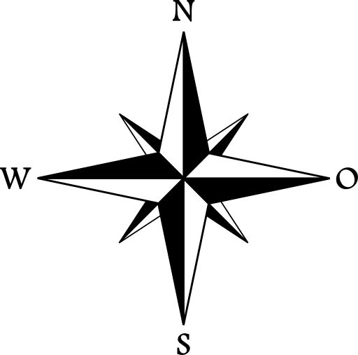

Peta Persebaran Wabah Virus Covid-19 Di Provinsi Bali
Peta Persebaran Wabah Virus Covid-19 Di Provinsi Bali

Ujian Tengah Semester
Praktikum SIG WEB
Dibuat Oleh:
Angga Rahmat Ramadhani
20/464414/SV/18733
Dosen Pengampu:
Hidayat Panuntun, ST, M.Eng., D.Sc
Praktikum SIG Berbasis Web
Teknologi Survei dan Pemetaan Dasar
Universitas Gadjah Mada
2022